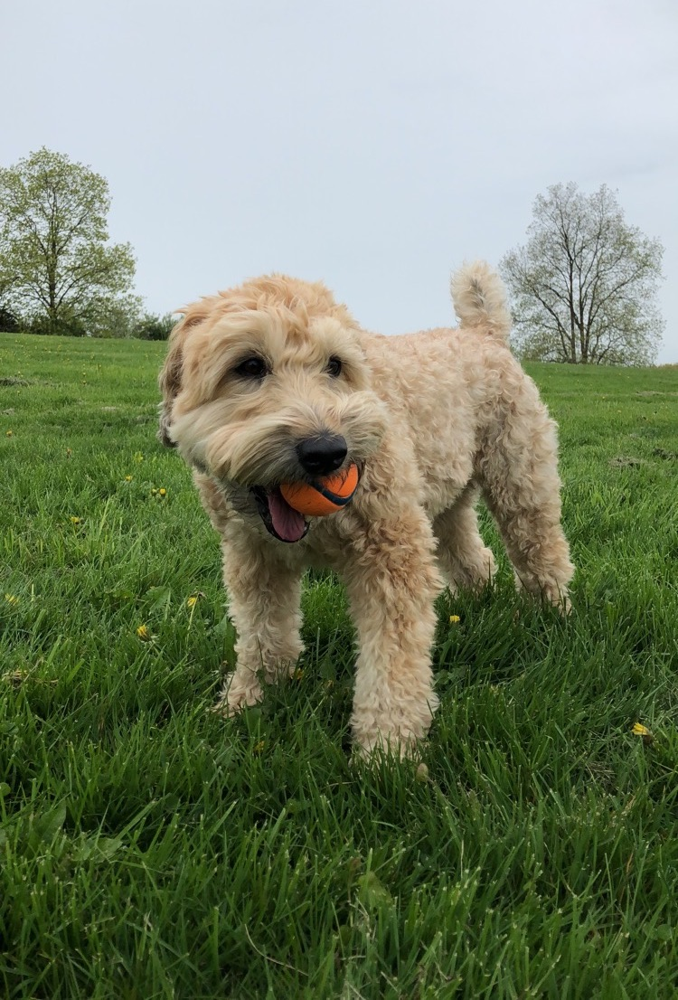
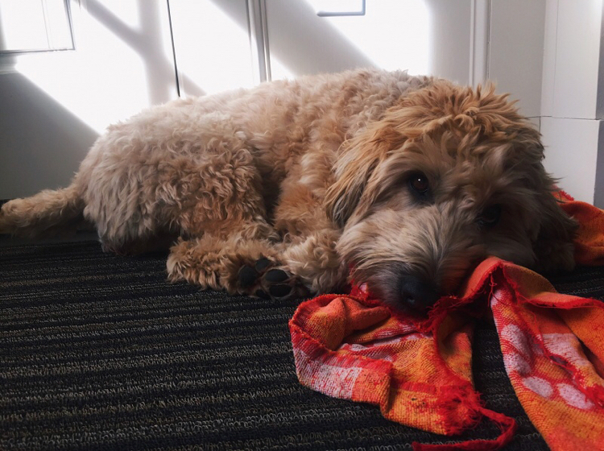
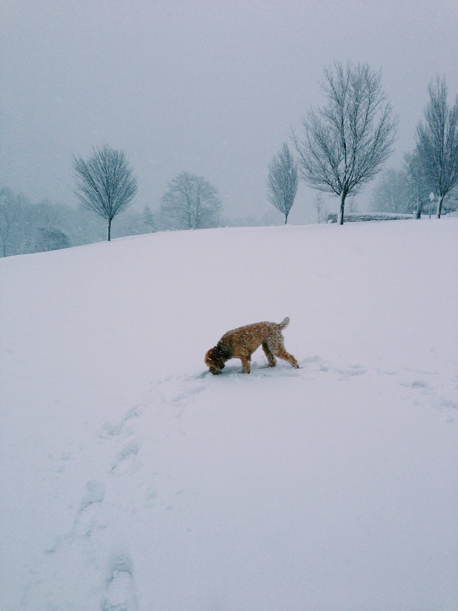
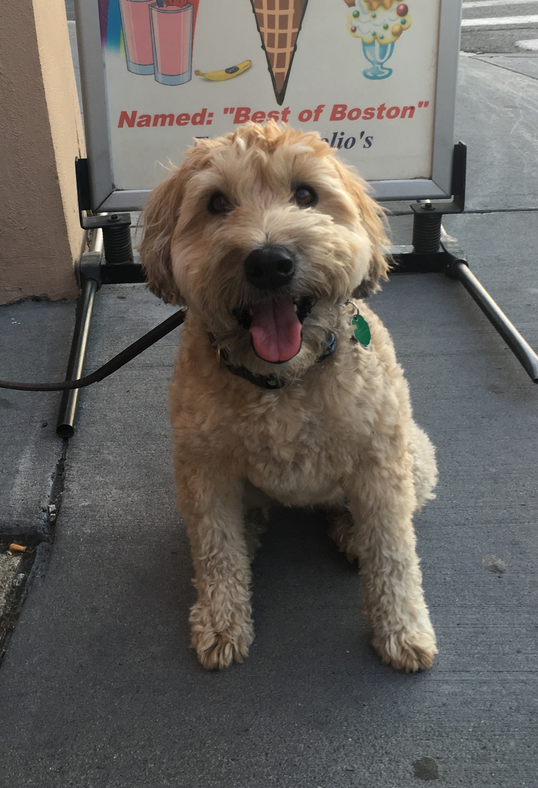
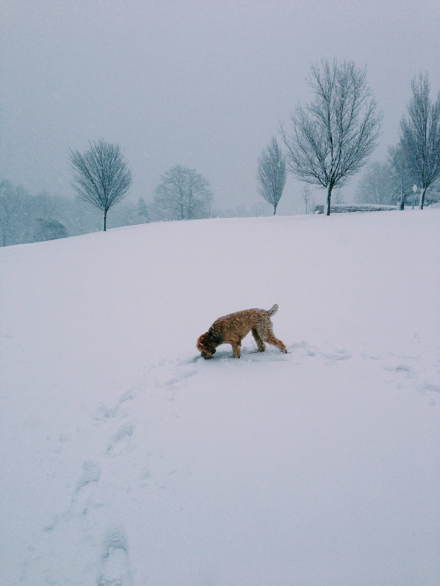
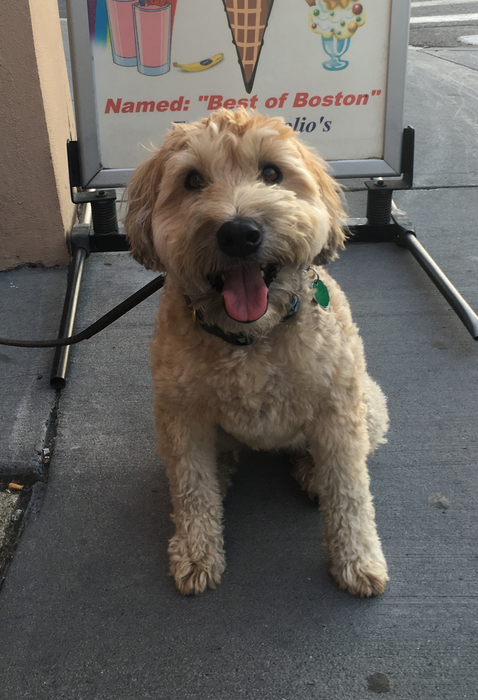

Zoe the Wheatie
Zoe is a Softcoated Wheaten Terrier. Wheaten Terriers originate from Ireland and are hypoallergenic. They are known for their changing hair color, that starts off as dark brown when they are puppies and changes to a pale beige when they reach adulthood. Their temperment is intelligent, affectionate, energenic, spirited, playful, and loyal.
ABOUT ZOE
Zoe was born November 1st, 2010. As a puppy she enjoyed exploring outside, playing in the snow, and meeting other dogs Her guilty pleasure is cream cheese and Starbucks butter croissant. Her favorite genre of music is classical and you can find her listening to it when she goes to sleep at night.
One of Zoe's favorite past times is playing fetch. Every morning she goes to the dog park and plays with her tennis ball. No matter the season, rain or shine, Zoe never misses an opportunity to run around at the park. As shown in the photo, Zoe is in her element at the park and it is undoubtedly her favorite part of the day.
One of Zoe's least favorite activities is going to the groomers or getting a bath. But, she does love all the attention she gets while getting one. Here she is pictured after just being bathed.
Gallery: More Photos of Zoe
 


